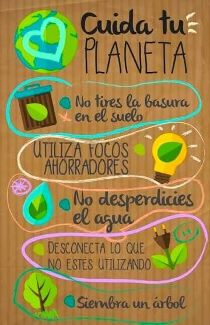

En su función de Agencia de viajes minorista Explorador pig se compromete a solo ofrecer productos de calidad de punta que surpasen toda expectativa del cliente, buscando llegar a estandares tan altos al igual de agencias de igual tipo pero gigante magnitud cómo viajes falabella.
La agencia de viajes se compromete con el medio ambiente y cumple documentos de la CAR ratificados por el PRC, (decreto 2220 de 2015) Promoviendo toda buena conducta ambientalmente sostenible, buscando proteger tanto el recurso renovable cómo el no renovable utilizando solo los recursos necesarios.

Por último pero no menos importante el compromiso y los valores; Al solicitar nuestros servicios tanto la empresa cómo el ente cliente, (tanto sí, cómo el usuario de los servicios) se compromete a tratar con respeto, dignidad y honradez siempre de una forma reciproca, todo para mantener una moral alta y excelente servicio al cliente dentro de la agencia de viajes.